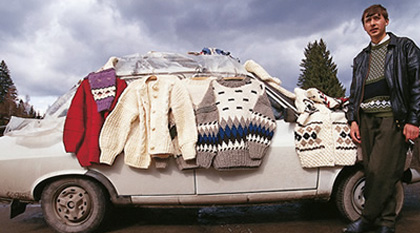

Szlengro! Willkommen!
Zwar ist die Republik Magyóristan eines der kleinsten Länder Europas, doch hat sie dem anspruchsvollen Touristen viel zu bieten. Der weltgrößte Produzent von Roter Beete und Ursprung des Keuchhustens ist ein geschichtsträchtiges Land: Überall befindet sich bewahrte und gehegte Vergangenheit, wie zum Beispiel in der Stadt Gyrorik, wo man einen der weltweit ältesten sich noch in Betrieb befindenden Kernreaktoren besichtigen kann.
Mit dieser Webseite möchten wir Ihnen einen Einblick in das von westlichen Standards noch komplett unberührte Kleinod Europas geben, das im Übrigen vollkommen fiktiv ist. Parallelen zu existierenden Ländern sind, falls vorhanden, zufällig und unbeabsichtigt entstanden. Auch die Beschreibung der Autoren und ihrer akademischen Laufbahnen beruht nicht auf echten Tatsachen.
Zusätzlich zu Informationen zu Land & Leuten bieten wir Ihnen auf unserer Website noch spannende Fakten zu unseren Autoren und aktuellen Links zu den Themen des Interactive Media. Klicken sie dazu auf die Navigationspunkte "Die Reisegruppe" bzw. "Reisetipps".
Geschichte
Zwar haben slawische Stämme das heutige Magyóristan schon wohl schon im 5. Jahrhundert besiedelt, die erste Erwähnung des Landes findet sich jedoch im Jahre 721, als der Fürst von Magyonska, Nlikod I, sich zum Herrn eines Reiches erklärte, das nicht nur sein eigenes Land, sondern auch Preußen, Germanien und weite Teile Skandinaviens umfasste. Das war ein ehrgeiziges Ansinnen des Herrschers, der im übrigen erst 12 Jahre alt war. Seine expansionistische Herrschaft dauerte nur wenige Woche.
Während des Mittelalters litt Magyóristan unter der Invasion durch zahlreiche Heere, darunter:
- Goten
- Tataren
- Türken
- Hunnen
- Balten
- Lombarden
- Eine besonders streitsüchtige Horde spanischer Nonnen
Schließlich vereinigte König Fjodor I. sein Land, indem er möglichst viele seine Bürger tötete und die, die nicht ermordet wurden, in Lehrberufe zwang.
Landschaft
In geografischer Hinsicht ist Magyóristan ein Land der Gegensätze: Von felsigen, größtenteils unfruchtbaren Bergen bis zu felsigen, größtenteils unfruchtbaren Ebenen ist hier alles zu finden. Die südlichen Regionen bestehen größtenteils aus flachem morastigen Marschland und trockengelegten Sümpfen. Im Norden gab es ursprünglich trockenes Brachland, aber dank großer Mengen an Düngemitteln und der progressiven Einstellung der magyóristanischen Regierung gegenüber genetisch veränderten Pflanzen ernten die dortigen Bauern heute üppige Mengen Futtermais, rote Beete und eine landestypische kartoffelähnliche Hybridknolle, die von EU-Wissenschaftlern erst noch für essbar erklärt werden muss.
Essen und Trinken
In Magyóristan werden wie in keinem anderen Land durch jahrhundertelang ausgereifte Fertigungsmethoden alle nur denkbaren Möglichkeiten ausgeschöpft, Fleisch mit Fleisch zu kombinieren. In der traditionsbewussten magyóristanischen Küche, die übrigens als einzig anerkannte Art zu kochen gilt, ist es außerdem Brauch, vor, während und nach jeder Mahlzeit ein Glas Zeerstumsk zu trinken. Dieser landestypische Knoblauchschnaps, von nahezu allen Magyóristanern für den Eigenbedarf selbst gebrannt, gilt mit seinem 90%igen Alkoholanteil als besonders stark und gut geeignet zur Heilung von Kinderkrankheiten.